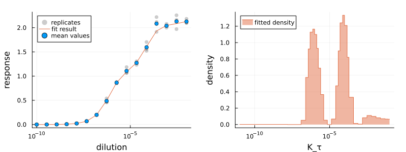

AntibodyMethodsDoseResponse
About
AntibodyMethodsDoseResponse.jl, AntibodyMethodsDoseResponseConvenience.jl and AntibodyMethodsDoseResponseRecipes.jl are Julia packages for the analysis of (antibody-binding) dose-response curves.
In essence, the dose-response data is modelled by the following accumulation model (see https://arxiv.org/abs/2407.06052 for further details and applications):
\[r(a) = \int_0^\infty g(K_\tau) \left(1- e^{-\frac{a}{K_\tau}} \right) \ dK_\tau\]
where $K_\tau \sim \frac{1}{k_{\text{on}}}$ is proportionally inverse to the binding rate $k_{\text{on}}$ and $g(K_\tau)$ is the $K_\tau$-density of epitopes. The packages also implement the Langmuir isotherm (equilibrium model). In either case, the analysis consists of a model fit, estimating the density $g(K_\tau)$ from measurement data.
In this documentation, both the terms density plot and histogram will be used interchangeably to refer to the plot of the estimated density $g(K_\tau)$.
| Package | Short Description |
|---|---|
AntibodyMethodsDoseResponseConvenience.jl | Convenience package for the analysis of dose-response curves. Contains predefined analysis and plotting methods. Recommended for the analysis of dose-response data. |
AntibodyMethodsDoseResponse.jl | Minimal package defining the underlying models and methods for the analysis of dose-response curves. Intended for the development of analysis methods from scratch. Requires fewer dependencies. |
AntibodyMethodsDoseResponseRecipes.jl | Plots.jl recipes for AntibodyMethodsDoseResponse objects. |
About the tutorials
The quick start guide
- A minimal tutorial, covering only the necessary steps to analyze dose-response data without any in-depth explanations.
- From here, the AnitbodyMethodsDoseResponseConvenience API is highly recommended to explore the additional options of the convenience functions that are not covered in the minimal tutorial.
- The recommendation for most users.
The Detailed explanations
- Covers the background and the internals of the packages.
- Assumes (at some points) to be read in order from top to bottom.
- The convenience functions (from the quick start guide) use the same data types and methods internally.
- Intended for developers that need access to the internal methods and that want to take full control over the analysis.
Installation
First, add the registry AntibodyPackagesRegistry:
using Pkg
Pkg.Registry.add()
Pkg.Registry.add(RegistrySpec(url = "https://github.com/AntibodyPackages/AntibodyPackagesRegistry"))Then, the packages can be installed as usual. E.g. AntibodyMethodsDoseResponseConvenience.jl, which installs all necessary dependencies for the analysis of dose-response curves:
using Pkg
Pkg.add("AntibodyMethodsDoseResponseConvenience")How to cite the package
If you would like to cite this package for scientific purposes, you might also want to cite the corresponding paper https://arxiv.org/abs/2407.06052.